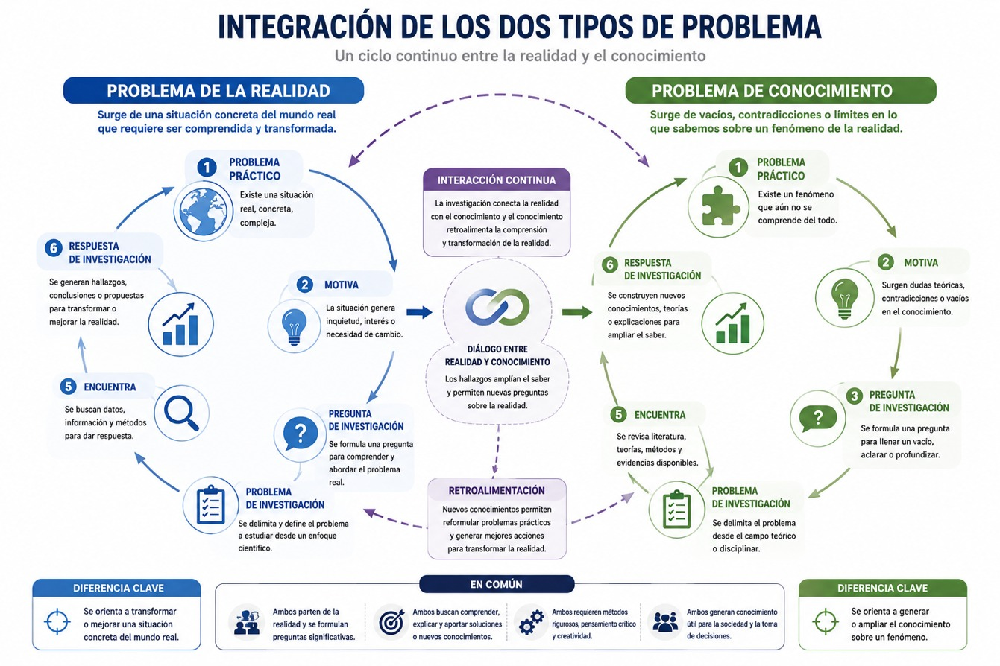
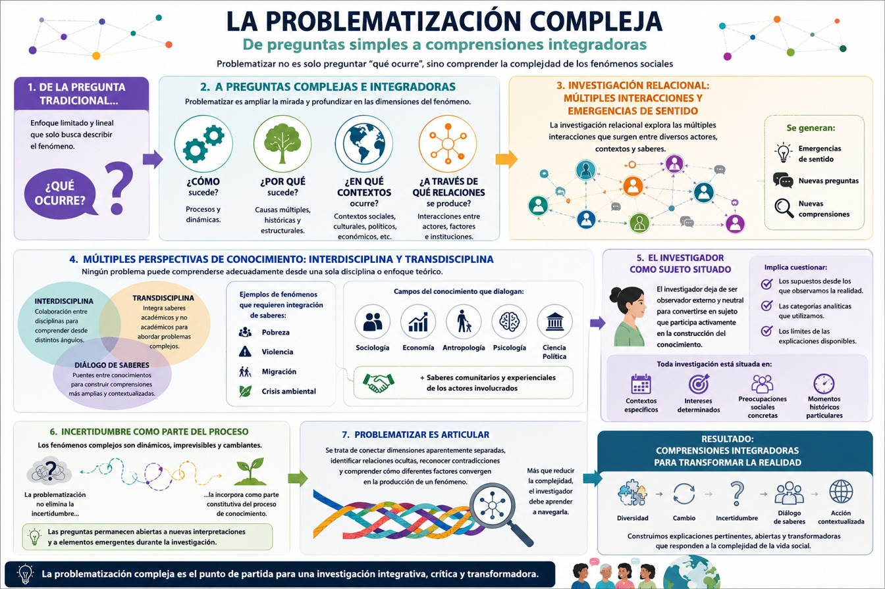
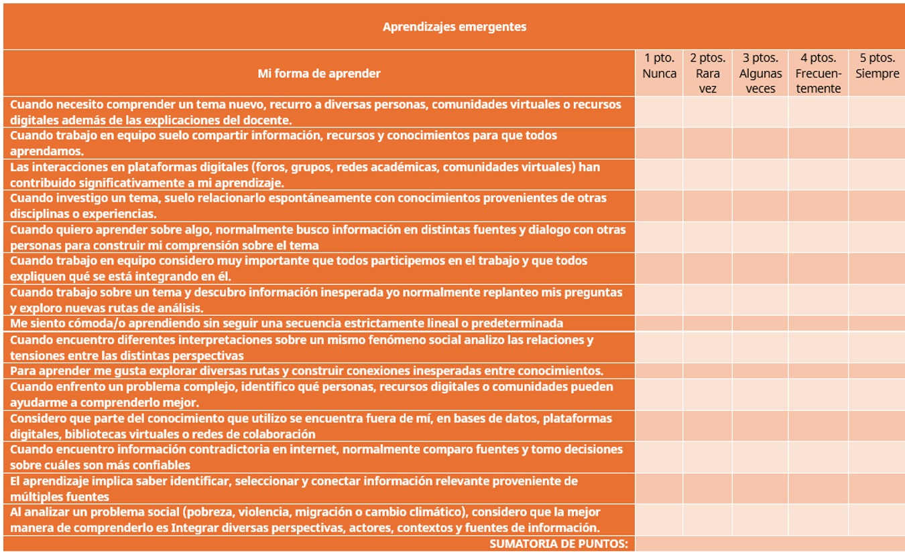
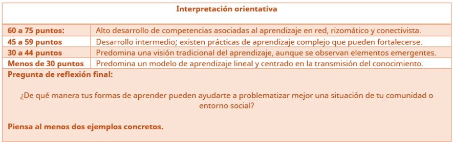
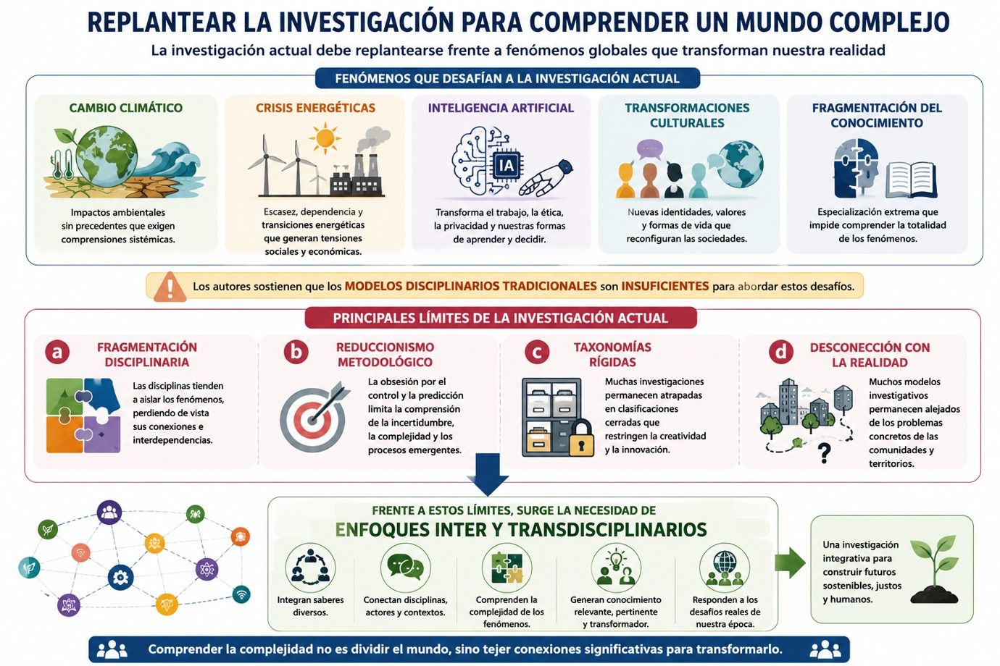
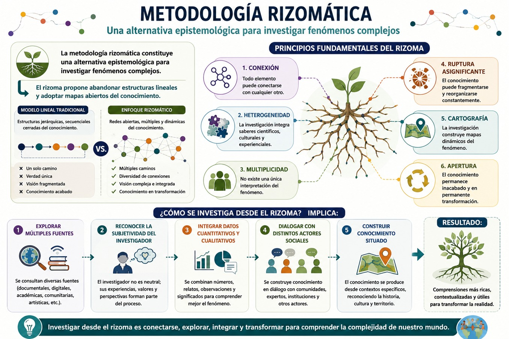

En este bloque vamos a comenzar distinguiendo entre el problema y la problematización de un fenómeno. Para ello, vamos a recuperar enfoques como el aprendizaje en red, el pensamiento rizomático y el conectivismo, los cuales reconocen que el conocimiento ya no se produce únicamente dentro de estructuras jerárquicas o disciplinarias tradicionales, sino mediante conexiones dinámicas entre sujetos, experiencias, tecnologías y contextos como lo vimos en el bloque 1. Desde esta perspectiva, aprender implica formular preguntas significativas, reconocer la complejidad de los fenómenos y desarrollar metodologías abiertas que permitan explorar múltiples rutas de comprensión. Este enfoque rompe con visiones lineales del aprendizaje y promueve una actitud investigativa basada en la curiosidad, la flexibilidad y la apertura epistemológica.
Uno de los puntos de partida del pensamiento complejo es reconocer que aprender no consiste únicamente en acumular información, sino en desarrollar la capacidad de formular preguntas significativas sobre la realidad. Además, la perspectiva del pensamiento complejo señala que la vida y el conocimiento se aprenden a partir de problemas, y que una de las principales limitaciones del aprendizaje radica en la manera en que se estructura el pensamiento ya que éste debe orientarse hacia el planteamiento y resolución de problemas.
En este contexto, el problema no debe entenderse como una simple dificultad o carencia, sino como una situación compleja que exige interpretación, análisis y construcción de sentido. Problematizar implica cuestionar aquello que parece evidente, interrogar las estructuras que organizan nuestra comprensión del mundo y abrir nuevas posibilidades interpretativas.
Diferencia entre problema y problematización
En el mundo existen infinidad de problemas, en la vida pública se pueden identificar problemas de toda índole dadas las condiciones materiales de la sociedad y los recursos con los que cuenta, por ejemplo podemos identificar problemas de abasto de agua tanto en las ciudades como en las comunidades rurales, problemas de recolección y acumulación de basura, de contaminación, de falta de vivienda, de acceso a trabajos dignos y bien remunerados, problemas de salud mental y física en las comunidades, y un largo etcétera. Sin embargo, abordar un problema desde el conocimiento requiere más que su identificación en la vida social.
Si bien nuestro interés para pensar y estudiar sobre algo en particular surge con un problema de la realidad que nos interese o interpele por cualquier motivo (por ejemplo, porque es algo que se vive en tu comunidad), aún es necesario convertirlo en un problema del conocimiento, es decir, algo que debe abordarse desde el pensamiento. En el diagrama puedes ver la diferencia entre problema de la realidad y problema del conocimiento. Los dos están interrelacionados, pero no son lo mismo:

- Booth, W., Colomb, G. & Joseph Williams, Cómo convertirse en un hábil investigador, Barcelona, Gedisa, 2004, p.p. 55-67.
Ahora bien, cómo puedes ver en el diagrama, el problema de la realidad y el problema del conocimiento están relacionados, ambos parten de la realidad y se formulan preguntas significativas, ambos buscan comprender, explicar y aportar soluciones, ambos requieren pensamiento crítico y creatividad y ambos generan conocimiento útil para la sociedad y la toma de decisiones. Entonces, si existe un problema en tu comunidad y te interesa porque te gustaría encontrar una solución para ello, lo primero que debemos hacer es buscar información sobre ese problema, para encontrar “qué sabemos” sobre él. En el diagrama del lado derecho, el que describe el problema de conocimiento verás que el numeral 1 tiene cómo ícono una pieza de rompecabezas, eso quiere decir que todavía hay algo que no sabemos y que debemos saber eso para completar el conocimiento. Por ejemplo, podrías pensar que el problema del desabasto de agua es bastante conocido y que sabemos muchísimo sobre eso pero quizás no sabemos mucho sobre las características de ese problema en tu comunidad, o sobre los problemas que a su vez este genera, por ejemplo en la salud, en la alimentación, en las relaciones familiares y salud mental de los distintos grupos sociales de tu comunidad. Y como te imaginarás, si no sabemos sobre ello difícilmente podremos proponer una solución.
Es por lo que tenemos que problematizar:
Andrade y Rivera (2019) en Reflexiones sobre investigación integrativa, nos dicen que la problematización puede entenderse no como la simple identificación de un problema aislado, sino como un proceso de construcción crítica del objeto de estudio que permite reconocer las múltiples relaciones, dimensiones y niveles que intervienen en un fenómeno social. Estos autores sostienen que la investigación contemporánea debe superar las visiones reduccionistas y lineales heredadas del paradigma clásico para aproximarse a la realidad desde una perspectiva compleja, relacional y transdisciplinaria.
La problematización constituye uno de los momentos más importantes dentro del proceso de investigación o conocimiento sobre un problema, ya que permite transformar una inquietud inicial o una situación observada en un objeto de estudio susceptible de análisis científico. Sin embargo, en el contexto de las ciencias sociales contemporáneas, problematizar no implica únicamente delimitar un problema o formular preguntas de investigación, sino comprender las múltiples relaciones, tensiones, contradicciones y emergencias que configuran los fenómenos sociales. Desde la perspectiva de la complejidad y la investigación integrativa, la problematización se convierte en un ejercicio crítico que cuestiona las explicaciones simplificadoras y busca construir una comprensión más amplia de la realidad.
Los enfoques tradicionales de investigación, influenciados por el pensamiento cartesiano y el paradigma positivista, tendieron a fragmentar la realidad en partes aisladas con el propósito de facilitar su análisis. Este procedimiento permitió, como lo hemos visto, importantes avances científicos; sin embargo, también generó una visión reduccionista de los fenómenos sociales al considerar que podían explicarse mediante relaciones lineales de causa y efecto. Como señalan los autores del texto, esta forma de producir conocimiento condujo a la especialización extrema de las disciplinas y a la separación artificial entre fenómenos que en la realidad se encuentran profundamente interconectados.
Frente a estas limitaciones, el paradigma de la complejidad propone comprender los fenómenos como sistemas dinámicos caracterizados por la interacción permanente entre múltiples factores. Desde esta perspectiva, la problematización exige reconocer que los problemas sociales no poseen una única causa ni una única explicación. Por el contrario, emergen de procesos históricos, culturales, económicos, políticos y simbólicos que interactúan entre sí de manera constante. La realidad social aparece entonces como una trama compleja de relaciones en la que cada elemento influye y es influido por otros.
En este sentido, problematizar implica superar la pregunta tradicional centrada exclusivamente en “qué ocurre” para avanzar hacia interrogantes relacionadas con “cómo”, “por qué”, “en qué contextos” y “a través de qué relaciones” se produce determinado fenómeno. La investigación integrativa propone que los problemas deben analizarse considerando la incertidumbre, la no linealidad, las contradicciones y los procesos emergentes que caracterizan a los sistemas sociales. Los autores señalan que la investigación relacional debe orientarse hacia la exploración de las múltiples interacciones y emergencias de sentido que surgen entre diversos actores, contextos y saberes.
La construcción de una problematización compleja también requiere reconocer la existencia de múltiples perspectivas de conocimiento. El texto destaca la importancia de la interdisciplina y la transdisciplina como estrategias para construir puentes entre distintos campos del saber. Desde esta lógica, ningún problema puede ser comprendido adecuadamente desde una sola disciplina o enfoque teórico. Por ejemplo, fenómenos como la pobreza, la violencia, la migración o la crisis ambiental requieren integrar conocimientos provenientes de la sociología, la economía, la antropología, la psicología, la ciencia política e incluso los saberes comunitarios y experienciales de los actores involucrados.
Asimismo, la problematización implica cuestionar los supuestos desde los cuales se observa la realidad. La o el investigador deja de ser un observador externo y neutral para convertirse en un sujeto que participa activamente en la construcción del conocimiento. Esta perspectiva reconoce que toda investigación está situada históricamente y que las preguntas formuladas responden a contextos específicos, intereses determinados y preocupaciones sociales concretas. Por ello, problematizar supone reflexionar críticamente sobre las propias categorías analíticas y sobre los límites de las explicaciones disponibles.
Otro aspecto fundamental consiste en reconocer la existencia de incertidumbre. Los autores señalan que los fenómenos complejos presentan comportamientos dinámicos, imprevisibles y cambiantes, por lo que resulta imposible alcanzar explicaciones absolutas o definitivas. La problematización no busca eliminar la incertidumbre, sino incorporarla como parte constitutiva del proceso de conocimiento. De esta manera, las preguntas de investigación permanecen abiertas a nuevas interpretaciones y a la incorporación de elementos emergentes que puedan aparecer durante el trabajo investigativo.
Desde esta perspectiva, la problematización desde el pensamiento complejo puede entenderse como un ejercicio de articulación. Se trata de conectar dimensiones aparentemente separadas, identificar relaciones ocultas, reconocer contradicciones y comprender cómo diferentes factores convergen en la producción de un fenómeno determinado. Más que reducir la complejidad, la o el investigador debe aprender a navegarla, construyendo explicaciones que integren diversidad, cambio e incertidumbre como puedes observar en el siguiente diagrama:

Es importante subrayar que cuando problematizamos un problema de la realidad no sólo debemos tomar en cuenta las distintas perspectivas científicas a través de la colaboración de interdisciplinas (interdisciplinariedad) o de la integración de saberes de otras disciplinas o fuentes (transdisciplina) sino también debemos realizar un diálogo de saberes que incluya los saberes de tu propia comunidad sobre esos problemas, y que integre la visión de cómo lo viven aquellas personas que se ven afectadas por el mismo. Recuerda que la realidad de esos problemas sociales se experimenta de manera distinta por los sujetos. En ese sentido, cuando estemos realizando la problematización de un problema debemos incluir la perspectiva de los propios afectados y también tu propia posición como estudiante o profesionista y los valores desde los cuáles estás analizando el problema para proponer su posible solución.
En síntesis, la problematización constituye un proceso intelectual y metodológico orientado a construir una comprensión crítica de la realidad. Desde el paradigma de la complejidad, problematizar significa identificar relaciones, reconocer múltiples causalidades, integrar saberes diversos y asumir la incertidumbre inherente a los fenómenos sociales. Lejos de reducir los problemas a explicaciones simples o lineales, este enfoque propone abordarlos como sistemas complejos en permanente transformación. De esta manera, la problematización se convierte en una herramienta fundamental para generar conocimientos más pertinentes, contextualizados y capaces de responder a los desafíos contemporáneos de las ciencias sociales.
- Andrade, José y Rivera, Roberto Comps. (2019). Reflexiones sobre investigación integrativa. Una perspectiva inter y transdisciplinar. Colombia: Kavilando. p.p. 65-89
Te recomendamos ver estos videos para profundizar sobre este tema:
Aprendizaje en red, rizomático y conectivista.
Ahora haremos una reflexión sobre tu propio aprendizaje y cómo esto puede contribuir a una mejor problematización de un problema de la realidad. Como sabemos, en los últimos años la incorporación de las Tecnologías de Información y Comunicación ha transformado profundamente las formas de aprender, Bosco (2019) señala que la tecnología ha modificado la comunicación, la interacción y las formas de construcción del conocimiento dentro y fuera del aula. Veamos en qué consiste este tipo de aprendizaje.
Aprendizaje en red
El aprendizaje en red surge en la llamada sociedad red, concepto desarrollado por Manuel Castells, quien plantea que las estructuras sociales contemporáneas se organizan mediante flujos de información y redes interactivas.
En este modelo, aprender implica construir comunidades de conocimiento donde docentes y estudiantes participan activamente en procesos colaborativos. Bosco señala que el aprendizaje en red se construye a través de interacciones, contenidos compartidos, trabajo colaborativo y responsabilidad colectiva.
En este entorno:
- • La o el estudiante deja de depender exclusivamente del docente.
- • El conocimiento circula entre múltiples nodos.
- • El aprendizaje ocurre en diferentes tiempos y espacios.
- • La interacción digital posibilita comunidades distribuidas.
Este modelo favorece el desarrollo de pensamiento crítico, colaboración, creatividad y resolución de problemas.
Aprendizaje rizomático
El aprendizaje rizomático se inspira en el concepto de rizoma desarrollado por Gilles Deleuze y Félix Guattari. El rizoma representa una estructura abierta, no jerárquica y multidimensional donde cualquier punto puede conectarse con otro.
En términos educativos, aprender rizomáticamente implica:
- • Construir trayectorias de aprendizaje no lineales.
- • Conectar saberes diversos.
- • Reconocer múltiples entradas al conocimiento.
- • Aceptar bifurcaciones e incertidumbre.
Como señala Rivera y Andrade (2019), el rizoma constituye un sistema abierto donde el conocimiento se expande mediante conexiones, líneas de fuga y procesos de desterritorialización. Esta visión rompe con currículos rígidos y favorece una educación basada en exploración, creatividad y autonomía.
Aprendizaje conectivista
La teoría del conectivismo fue desarrollada por George Siemens y Stephen Downes. Según Bosco (2019)., el conectivismo surge para explicar el aprendizaje en un mundo interconectado, tomando como base la teoría del caos, la complejidad y la autoorganización.
Desde esta teoría podemos comprender que:
- • El aprendizaje no reside exclusivamente en la mente individual.
- • El conocimiento puede existir en redes, bases de datos u organizaciones.
- • Aprender implica establecer conexiones significativas.
- • La toma de decisiones constituye parte del aprendizaje.
Bosco (2019) explica que tu profesora o profesor en este modelo, funciona como un acompañante y un nodo más dentro de la red, orientándote para construir tus propios itinerarios de aprendizaje. Esto representa una ruptura con la educación tradicional centrada en la transmisión vertical del conocimiento.
Actividad:
Hagamos un ejercicio para ver cómo has desarrollado estos tipos de aprendizajes. Toma un lápiz y papel y responde a las preguntas y anota los puntos que vayas obteniendo por cada una de tus respuestas. Al final súmalas y te darás cuenta de cómo estás aprendiendo hasta este momento. Además, te recomendamos volver a realizar este ejercicio cuando termines la UCA y veas si hay algún cambio en tu puntaje.


- Bosco, Martha (2019). El aprendizaje en red, características, actores e interacciones, México: Pedagogía, eShola, FFL-UNAM. P.p. 123-149.
- Andrade, José y Rivera, Roberto Comps. (2019). Reflexiones sobre investigación integrativa. Una perspectiva inter y transdisciplinar. Colombia: Kavilando. P.p. 65-89
- García, Andrés y Solórzano, Fernando (2016). Fundamentos del aprendizaje en red desde el conectivismo y la teoría de la actividad, en Revista Cubana de Educación Superior, N. 3, 98-112.
Te recomendamos ver estos videos para profundizar sobre este tema:
Límites y desafíos de la investigación
La investigación contemporánea enfrenta desafíos derivados de la complejidad creciente de los fenómenos sociales. Andrade y Rivera (2019) en Reflexiones sobre investigación integrativa plantean que la investigación actual debe replantearse frente fenómenos como:
- • Cambio climático
- • Crisis energéticas
- • Inteligencia artificial
- • Transformaciones culturales
- • Fragmentación del conocimiento
Los autores sostienen que los modelos disciplinarios tradicionales resultan insuficientes para abordar estos desafíos. Y entre los principales límites de la investigación actual destacan:
a) Fragmentación disciplinaria: quiere decir que las disciplinas tienden a aislar los fenómenos, perdiendo de vista sus conexiones.
b) Reduccionismo metodológico: que se da por la obsesión por el control y la predicción limita la comprensión de la incertidumbre.
c) Taxonomías rígidas: que se da porque muchas investigaciones permanecen atrapadas en clasificaciones cerradas que restringen la creatividad investigativa.
d) Desconexión con la realidad: se presenta pues muchos modelos investigativos permanecen alejados de los problemas concretos de las comunidades.
Y frente a estos límites, surge la necesidad de enfoques inter y transdisciplinarios como lo puedes ver en el siguiente diagrama:

Metodología rizomática
Como hemos visto a lo largo de este bloque y el anterior, las transformaciones aceleradas que experimenta el mundo contemporáneo han puesto en evidencia las limitaciones de los modelos tradicionales de investigación para comprender fenómenos cada vez más complejos. Procesos como el cambio climático, las crisis energéticas, la expansión de la inteligencia artificial, las transformaciones culturales y la creciente fragmentación del conocimiento desafían las formas convencionales de producción científica. Estos fenómenos no pueden ser explicados adecuadamente mediante enfoques lineales que buscan aislar variables y establecer relaciones causales simples. Por el contrario, se caracterizan por la interdependencia de múltiples factores, la incertidumbre, la emergencia de nuevas dinámicas y la constante reconfiguración de las relaciones sociales.
Ante este escenario, diversos autores han señalado la necesidad de construir enfoques investigativos capaces de trascender las fronteras disciplinarias y reconocer la complejidad inherente a la realidad social. En este contexto, la metodología rizomática, inspirada en la noción de rizoma desarrollada por Gilles Deleuze y Félix Guattari (1988), constituye una alternativa particularmente relevante. Su principal aporte consiste en ofrecer una forma de comprender y estudiar los fenómenos sociales como redes abiertas de conexiones múltiples, dinámicas y no jerárquicas. Desde esta perspectiva, la investigación deja de concebirse como un recorrido lineal hacia una verdad única y se transforma en un proceso de exploración relacional donde emergen nuevas conexiones, interpretaciones y posibilidades de comprensión.
Uno de los principales límites de la investigación contemporánea es la fragmentación disciplinaria. La especialización creciente del conocimiento ha permitido profundizar en numerosos campos de estudio, pero también ha generado una tendencia a analizar los fenómenos de manera aislada. Como consecuencia, se pierde de vista la compleja red de relaciones que vincula procesos económicos, políticos, culturales, tecnológicos y ambientales.
La metodología rizomática ofrece una respuesta a esta limitación porque parte del supuesto de que todo conocimiento se encuentra conectado con otros saberes. En lugar de organizar la investigación mediante estructuras jerárquicas y compartimentos disciplinarios, propone construir redes de relaciones entre diferentes perspectivas, conceptos y experiencias. De esta manera nos invita a no revisar sólo la información proveniente de nuestra propia formación sino a establecer conexiones entre múltiples campos de conocimiento, favoreciendo procesos interdisciplinarios y transdisciplinarios.
De este modo, problemas complejos como el cambio climático pueden ser abordados simultáneamente desde la ecología, la economía, la sociología, la antropología, la ciencia política y los saberes comunitarios. La realidad deja de aparecer fragmentada y comienza a percibirse como una trama de interdependencias donde cada elemento adquiere sentido en relación con los demás.
Otro de los obstáculos señalados en la investigación tradicional es el reduccionismo metodológico. Durante mucho tiempo predominó la idea de que conocer implicaba controlar, predecir y eliminar la incertidumbre. Sin embargo, como ya hemos visto, los fenómenos contemporáneos muestran comportamientos dinámicos, imprevisibles y emergentes que desafían cualquier pretensión de control absoluto.
La metodología rizomática reconoce precisamente esta condición incierta de la realidad. En lugar de buscar explicaciones definitivas, asume que el conocimiento se construye a través de conexiones cambiantes que pueden modificarse conforme aparecen nuevos elementos en el proceso investigativo. Las bifurcaciones, desviaciones y descubrimientos inesperados dejan de considerarse errores metodológicos para convertirse en oportunidades de aprendizaje.
Esta apertura permite comprender mejor fenómenos caracterizados por la complejidad, como los impactos sociales de la inteligencia artificial o las transformaciones culturales derivadas de las tecnologías digitales. En ambos casos, las consecuencias futuras no pueden predecirse completamente, por lo que resulta necesario adoptar metodologías flexibles capaces de incorporar la incertidumbre como parte constitutiva del conocimiento.
Las taxonomías rígidas representan otro límite importante de la investigación contemporánea. Muchos enfoques continúan organizando la realidad mediante categorías cerradas que dificultan la comprensión de fenómenos híbridos, cambiantes y multidimensionales. Esta situación resulta especialmente problemática en contextos donde las fronteras entre lo económico, lo cultural, lo tecnológico y lo político se vuelven cada vez más difusas.
La lógica rizomática cuestiona estas clasificaciones rígidas al sostener que cualquier punto puede conectarse con cualquier otro. En consecuencia, el conocimiento no se organiza mediante estructuras fijas sino a través de redes abiertas y procesos continuos de articulación. Esta perspectiva favorece la creatividad investigativa porque permite explorar rutas inesperadas, construir nuevas categorías analíticas y generar interpretaciones innovadoras.
Además, desde la metodología rizomática no nos preguntamos únicamente qué es un fenómeno, sino también cómo se conecta con otros procesos, qué nuevas relaciones produce y qué transformaciones genera. Gracias a ello, podemos ampliar las posibilidades de comprensión y evitar reducir la complejidad de la realidad a esquemas simplificados.
Finalmente, uno de los problemas más señalados en la producción científica contemporánea es su desconexión con las necesidades concretas de las comunidades. Con frecuencia, las indagaciones sobre un fenómeno se desarrollan dentro de marcos teóricos altamente especializados que terminan alejándose de las experiencias cotidianas de las personas. La metodología rizomática contribuye a superar esta distancia porque reconoce la legitimidad de múltiples formas de conocimiento. Eso quiere decir que, además de los saberes académicos, debemos incorporar las experiencias comunitarias, los conocimientos locales, las prácticas culturales y las narrativas de los actores involucrados que, como hemos visto, se refiere a cómo los seres experimentan esta realidad problemática. De esta manera, la investigación se convierte en un espacio de diálogo donde convergen diferentes perspectivas sobre un mismo problema.
Este enfoque resulta especialmente valioso para abordar desafíos contemporáneos que afectan directamente a las comunidades, como la crisis ambiental, la desigualdad social o las transformaciones tecnológicas. Al integrar diversos saberes y experiencias, la investigación adquiere una mayor capacidad para generar conocimientos socialmente pertinentes y contextualizados.
En suma, la metodología rizomática constituye una alternativa epistemológica para investigar fenómenos complejos. El rizoma propone abandonar estructuras lineales y adoptar mapas abiertos del conocimiento.
Sus principios fundamentales son:
- 1. Conexión: Todo elemento puede conectarse con cualquier otro.
- 2. Heterogeneidad: La investigación integra saberes científicos, culturales y experienciales.
- 3. Multiplicidad: No existe una única interpretación del fenómeno.
- 4. Ruptura asignificante: El conocimiento puede fragmentarse y reorganizarse constantemente.
- 5. Cartografía: La investigación construye mapas dinámicos del fenómeno.
- 6. Apertura: El conocimiento permanece inacabado y en permanente transformación.
Metodológicamente, investigar desde el rizoma implica:
- a) Explorar múltiples fuentes.
- b) Reconocer la subjetividad del investigador.
- c) Integrar datos cuantitativos y cualitativos.
- d) Dialogar con distintos actores sociales.
- e) Construir conocimiento situado.
Esta metodología resulta especialmente útil para investigar fenómenos sociales emergentes, territoriales, culturales y educativos. El siguiente diagrama te muestra los principios fundamentales de esta metodología y lo que implica:

- Deleuze, G., & Guattari, F. (1988). Mil mesetas: Capitalismo y esquizofrenia. Valencia: Pre-Textos.
- Andrade, José y Rivera, Roberto Comps. (2019). Reflexiones sobre investigación integrativa. Una perspectiva inter y transdisciplinar. Colombia: Kavilando. p.p. 65-89
Te recomendamos ver este video para profundizar sobre este tema: